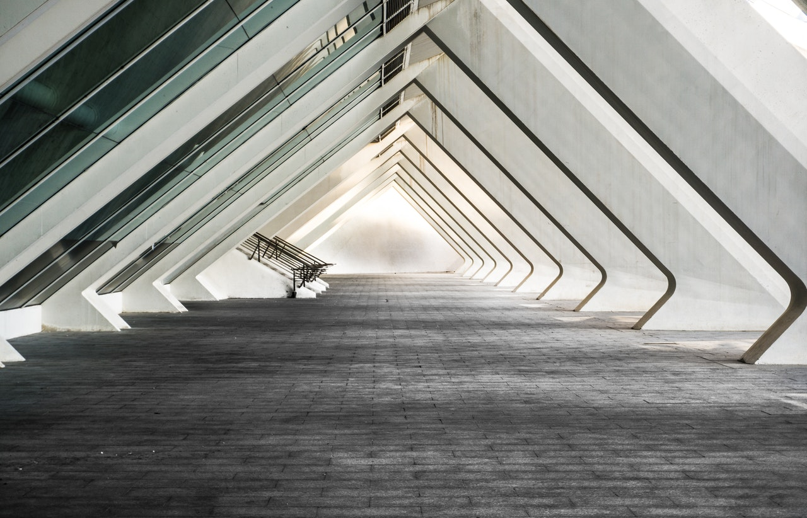
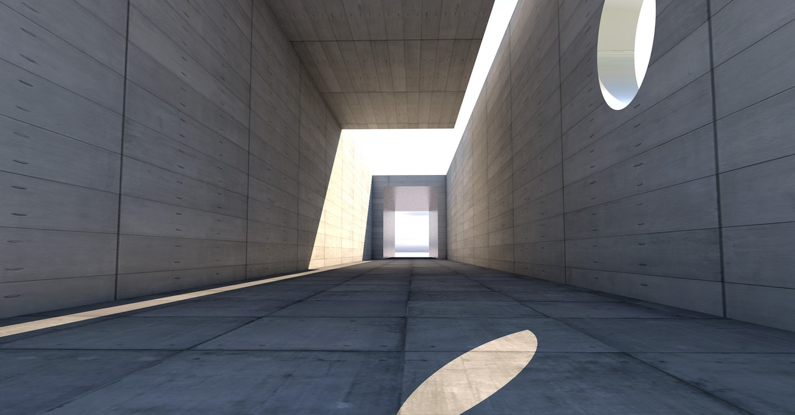

La arquitectura es el arte y la técnica de concebir, diseñar y construir edificaciones que funcionen como hábitat para el ser humano, ya sean viviendas, lugares de trabajo, de recreación o memoriales. El término proviene del griego antiguo, formado por los vocablos arch– (“jefe, autoridad”) y techné (“creación, construcción”), de donde se desprende que es el arte de la construcción.